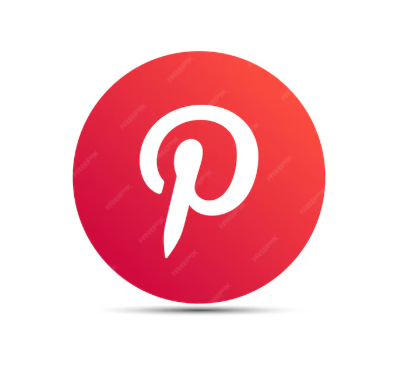

Cómo Funciona Este Grid Social
CSS Grid para Redes Sociales
.gallery {
display: grid;
grid-template-columns: repeat(auto-fit, minmax(280px, 1fr));
gap: 1.8rem;
padding: 2rem;
background: linear-gradient(135deg,
rgba(225, 48, 108, 0.05),
rgba(24, 119, 242, 0.05),
rgba(29, 161, 242, 0.05));
}
/* Cada red social tiene su propio tema */
.instagram-theme { border-color: #E1306C; }
.facebook-theme { border-color: #1877F2; }
.twitter-theme { border-color: #1DA1F2; }
.tiktok-theme { border-color: #000000; }
/* Grid responsivo automático */
/* ⭐ auto-fit: Adapta columnas al espacio disponible
⭐ minmax(280px, 1fr): Columnas flexibles pero mín 280px
⭐ gap: Espacio consistente entre items */📱 Grid Responsive
Se adapta automáticamente a cualquier dispositivo móvil o desktop
🎨 Temas por Red Social
Colores específicos para cada plataforma de redes sociales
📊 Contenido Dinámico
Muestra estadísticas reales de engagement en cada tarjeta
✨ Efectos Visuales
Hover effects, gradientes y animaciones específicas por red social